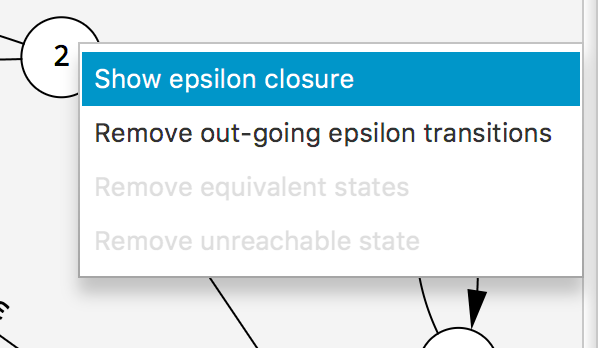
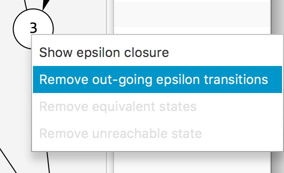
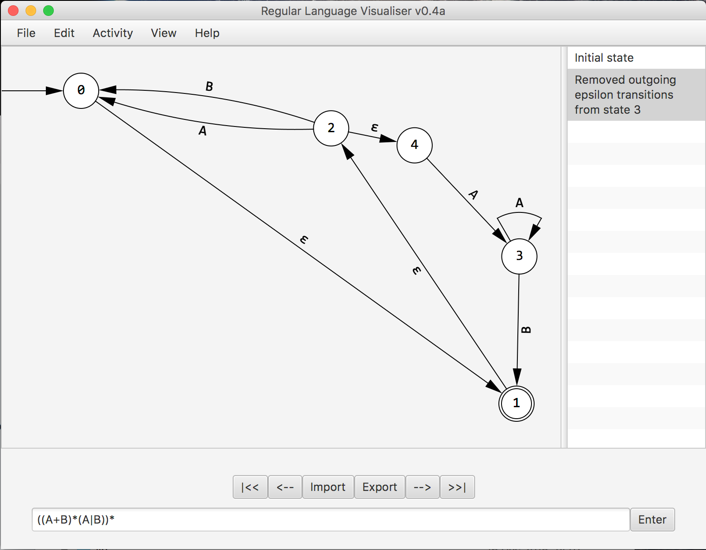
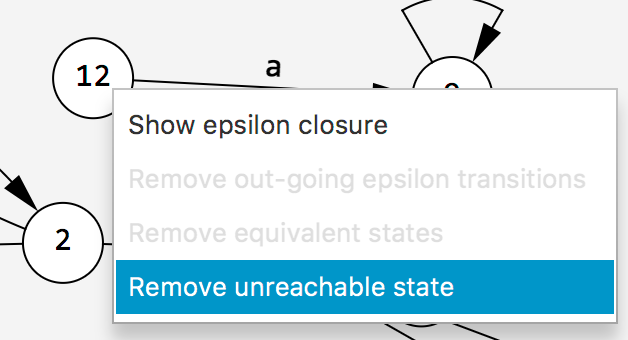
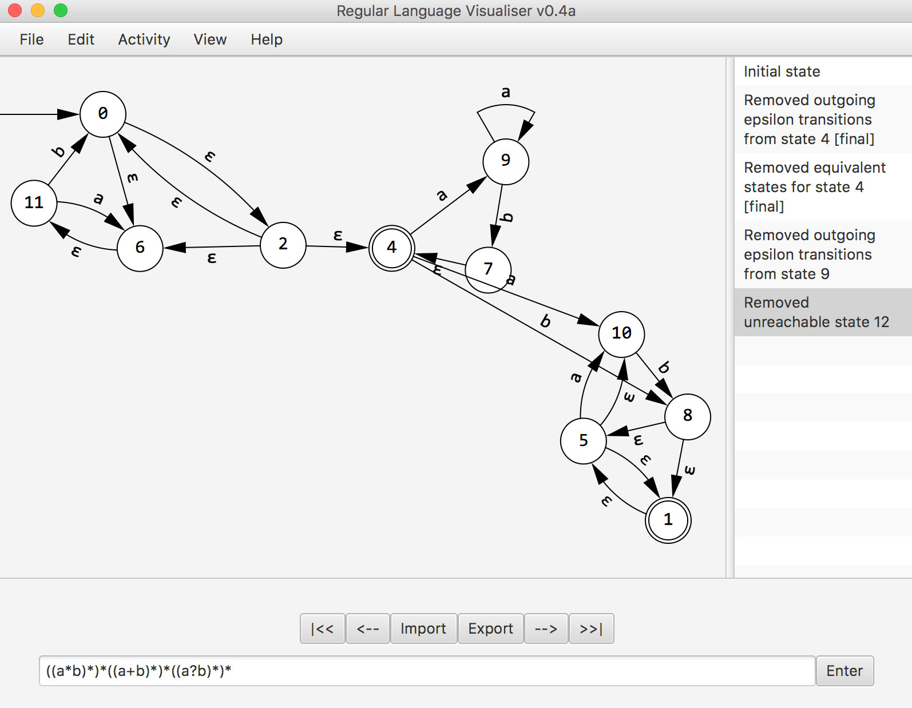
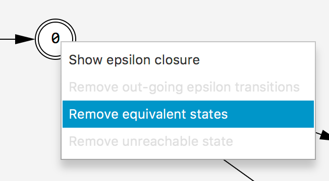
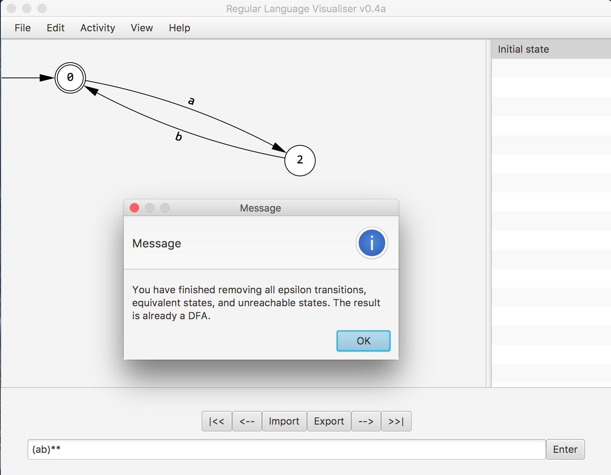

STEP 2. Enter your regular expression, into the text area (this activity will completely breakdown the expression). Alternatively you can import a graph or resume from another activity.
and press enter
STEP 3a. Right clicking on a node opens options: "show epsilon closure" will highlight states which are reachable through epsilon transitions.

STEP 3b. Right clicking on a node opens options: "Remove outgoing epsilon transitions." will remove outgoing epsilon transitions, simultaneously adding transitions that can be reached through epsilon transitions.


STEP 3c. Right clicking on a node opens some options:
"Remove unreachable state", will remove a state if and only if the transition is not reachable from the initial state.


STEP 3d. Right clicking on a node opens some options:
"Remove equivalent state" will remove states which had the same epsilon closure (does not remove all state are semantically equivalent).

